Nestled in the serene enclave of La Florida, Arona, this exquisite four-bedroom chalet blends contemporary comfort with the natural beauty of the Canary Islands. 438 m² of interior on a 1,226 m² plot, private pool, lush tropical garden, panoramic ocean and mountain views. A home built for calm, not for show. En el enclave sereno de La Florida, Arona, este exquisito chalet de cuatro dormitorios combina el confort contemporáneo con la belleza natural de las Islas Canarias. 438 m² de interior sobre una parcela de 1.226 m², piscina privada, frondoso jardín tropical, vistas panorámicas al océano y a las montañas. Una casa hecha para la calma, no para la apariencia.
€1,050,000
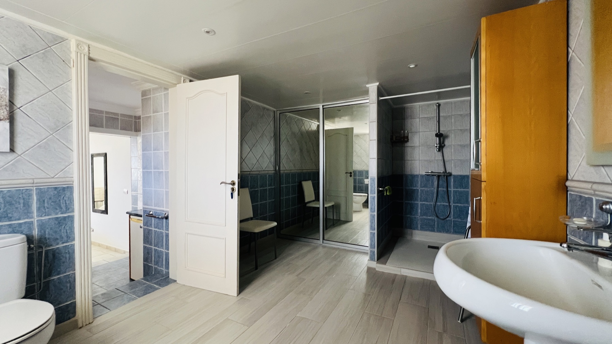
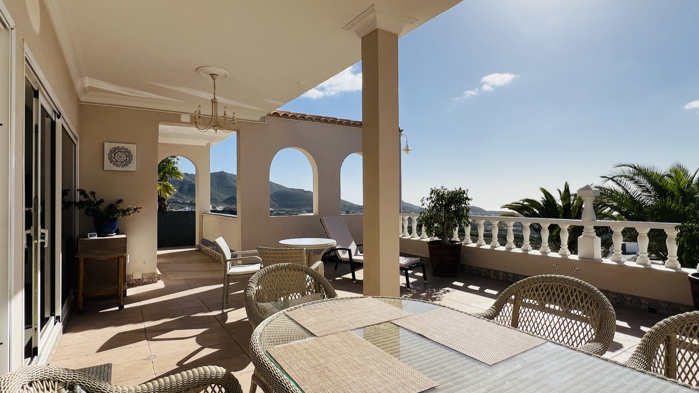
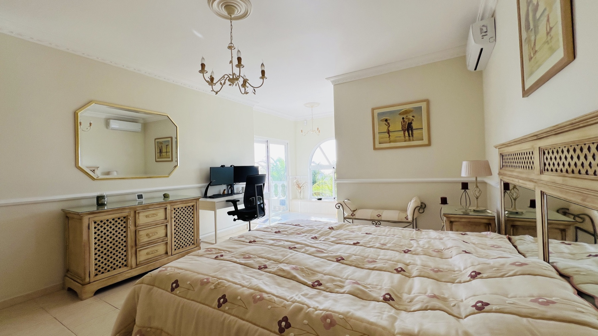
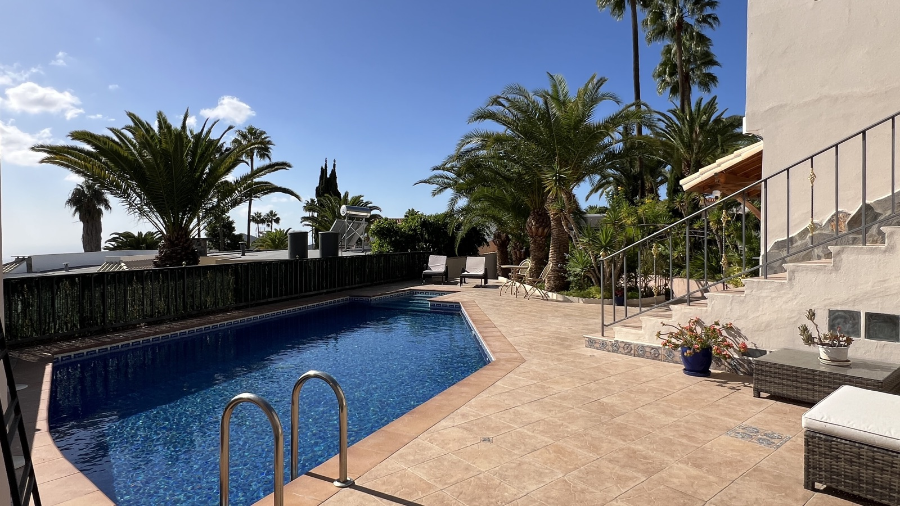
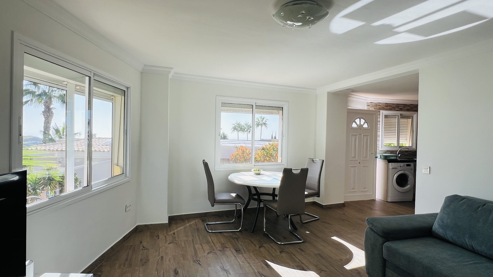
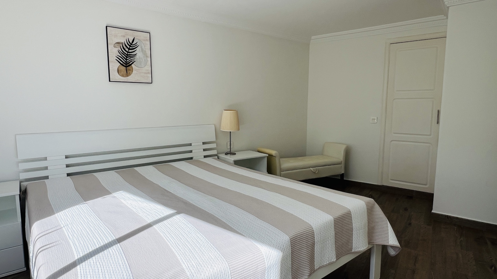
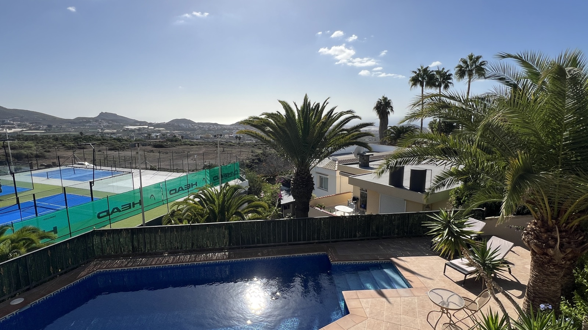
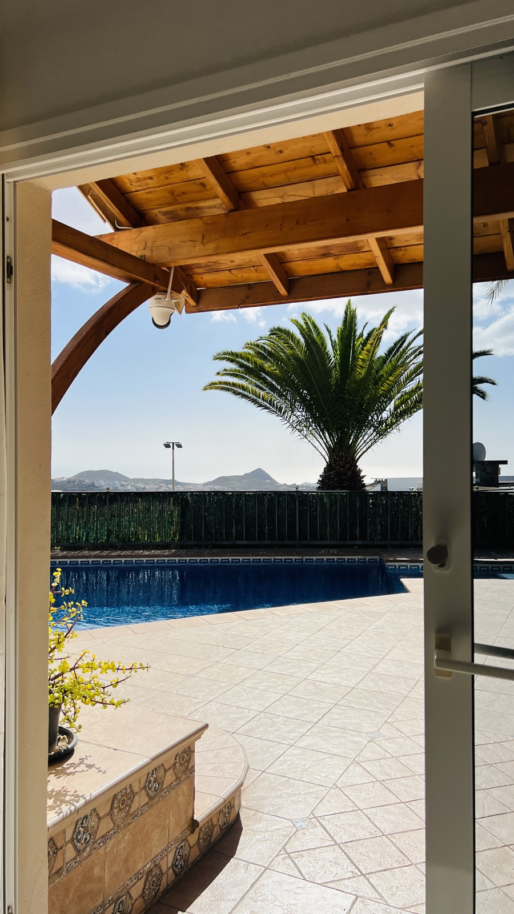
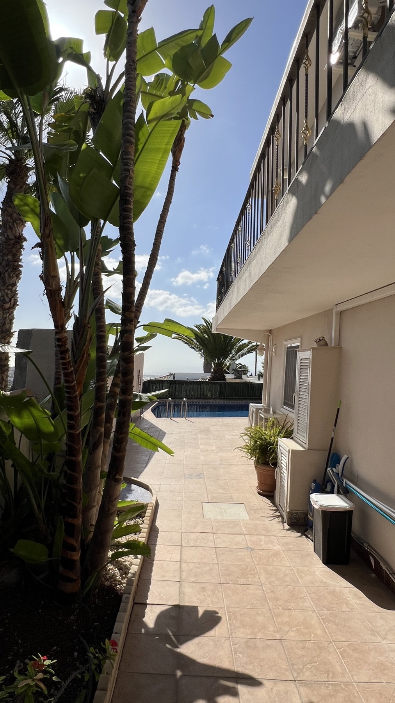
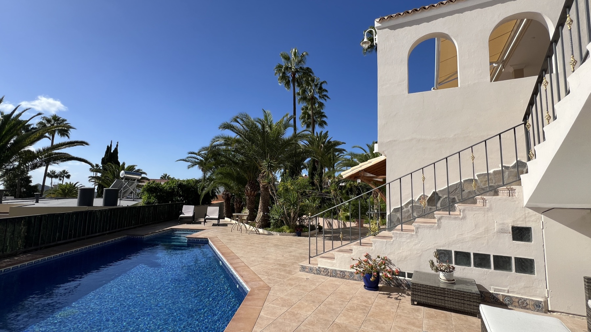
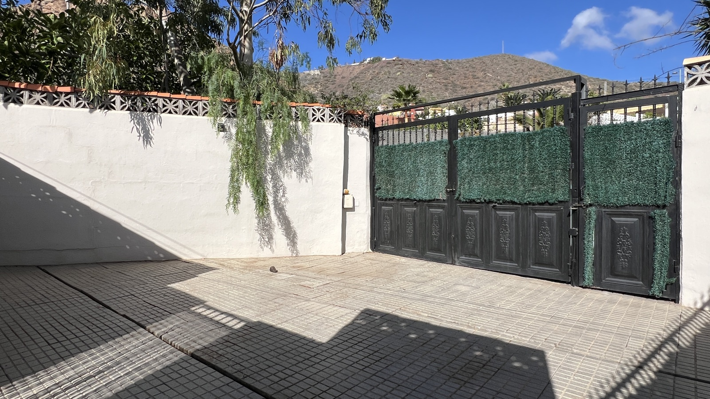
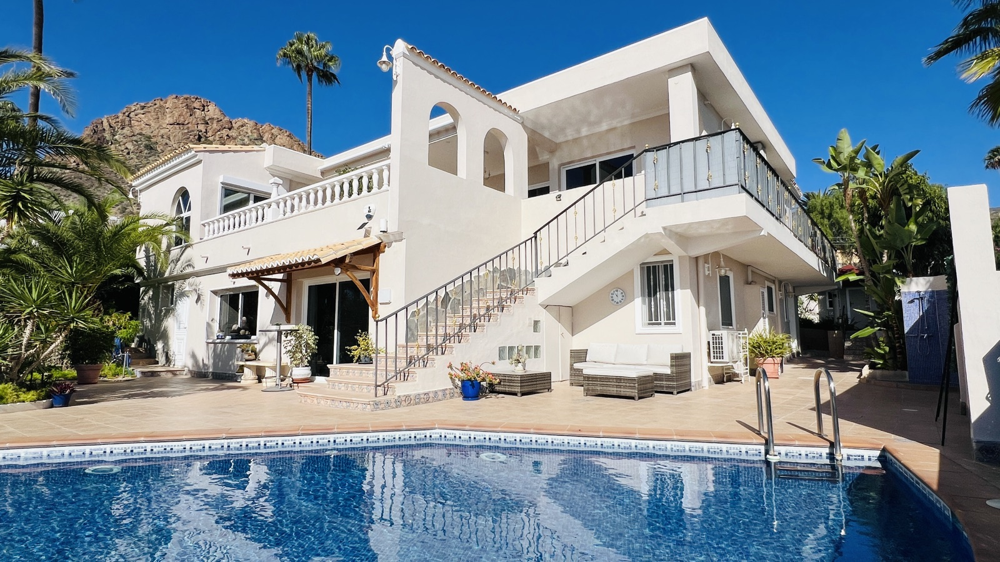
La Florida is one of Arona's quietest residential pockets — high enough to catch the Atlantic on the horizon and the volcanic mountains at your back, far enough from the tourist zones to feel like a private enclave. This villa sits on a 1,226 m² plot, with a mature tropical garden, private pool, covered terrace and panoramic views from every floor.
Inside, 438 m² across two floors: four bedrooms, three bathrooms, fireplaced living room that opens straight onto the terrace, separate dining, a classic kitchen with its own garden access, and plenty of circulation between indoors and outdoors. The primary suite has its own balcony; two guest bedrooms share a hall bath; a fourth bedroom works as an office, library or child's room.
Outside, the property delivers what La Florida is known for: sky, horizon, and infinite views. The pool sits directly below the main balcony; the covered pergola runs the length of the house; palm trees and a lush tropical garden wrap the perimeter for complete privacy. A private garage and a two-car carport complete the envelope.
Built in 1982 and maintained in excellent condition. A rare combination at this price point: privacy, garden, pool, views, and the kind of classic Canarian architecture that has aged gracefully into the landscape.
La Florida es uno de los enclaves residenciales más tranquilos de Arona — elevado para captar el Atlántico en el horizonte y las montañas volcánicas a la espalda, lo bastante alejado de las zonas turísticas como para sentirse como un refugio privado. Esta villa se asienta sobre una parcela de 1.226 m², con jardín tropical maduro, piscina privada, terraza cubierta y vistas panorámicas desde cada planta.
En el interior, 438 m² en dos plantas: cuatro dormitorios, tres baños, salón con chimenea que se abre directamente a la terraza, comedor independiente, cocina clásica con acceso propio al jardín, y amplia circulación entre interior y exterior. La suite principal tiene balcón propio; dos dormitorios de invitados comparten baño de pasillo; un cuarto dormitorio funciona como despacho, biblioteca o habitación infantil.
En el exterior, la propiedad entrega lo que caracteriza a La Florida: cielo, horizonte y vistas infinitas. La piscina se sitúa directamente bajo el balcón principal; la pérgola cubierta recorre toda la longitud de la casa; palmeras y un frondoso jardín tropical envuelven el perímetro para una privacidad total. Garaje privado y plaza cubierta para dos coches completan el conjunto.
Construida en 1982 y mantenida en excelente estado. Una combinación infrecuente a este precio: privacidad, jardín, piscina, vistas y esa arquitectura canaria clásica que ha envejecido con gracia dentro del paisaje.
Private viewings of Villa en la Florida by appointment with Stazio. Two generations, one family, 45 years in South Tenerife. Visitas privadas a Villa en la Florida con cita previa con Stazio. Dos generaciones, una familia, 45 años en el sur de Tenerife.